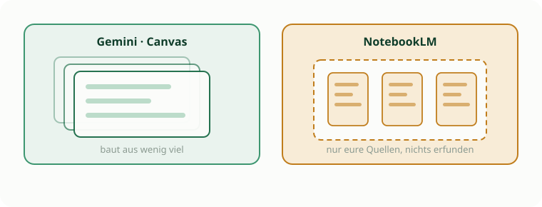

Nachschlagen · Nachmittag
Werkzeugkasten Nachmittag
Gemini im Canvas, NotebookLM, und wie ihr Texte ohne Abtippen in die KI bekommt.
Zwei Werkzeuge, zwei Stärken
Gemini baut aus wenig viel und ist im Canvas ein gemeinsamer Schreibtisch. NotebookLM arbeitet dagegen ausschließlich mit dem, was ihr hochladet, und erfindet nichts dazu. Für Materialaufbereitung ist genau das der Unterschied, auf den es ankommt.

Gemini im Canvas: vier Formate
Der Canvas ist Geminis Modus, in dem ihr gemeinsam an einem Dokument arbeitet, nicht nur chattet. Fangt klein an, ihr könnt jederzeit hochschalten.
Arbeitsblatt in Markdown
Sachtexte mit Aufträgen, Tabellen, Checklisten. Ideal, um aus Stichpunkten flüssigen Text zu machen. Bilder per Link.
Mini-Webseite in HTML
Infoseiten mit Design: Text fließt um Bilder, Videos per Link, kleine Klapp-Boxen für Lösungen.
Interaktive Lern-App
Simulationen, Quiz mit Feedback, interaktive Graphen, kleine Mathe-Labore. Aus einer Tabelle wird ein Diagramm.
Wissenschaftlicher Satz in LaTeX
MINT-Klausuren, Formelsammlungen, chemische Gleichungen. Graphen aus Code statt unscharfer Screenshots.
NotebookLM: nur eure Quellen
Ein sehr kluger Notizblock, der ausschließlich mit dem arbeitet, was ihr ihm gebt. Ihr ladet hunderte Seiten hoch und sagt: Ordne die Argumente in einer Tabelle. Oder: Gliedere das in fünf Unterrichtsphasen.
Was ihr hochladen könnt
- PDFs: Schulbuchseiten, Artikel, eigene Skripte.
- Google Docs und Slides: eure bestehenden Entwürfe.
- Textdateien und einfach hineinkopierter Text.
- Links zu Webseiten.
Was herauskommt
- FAQ: Fragen und Antworten zur Prüfungsvorbereitung.
- Study Guide: strukturierte Zusammenfassung mit Glossar.
- Inhaltsverzeichnisse und Briefing-Dokumente.
- Audio-Overview: ein KI-Podcast über eure Quellen, auf Englisch.
Text ohne Abtippen in die KI
Nur für den Nachmittag gedacht, weil hier auf euren Privat-Accounts Fotos erlaubt sind.
- Apple: Kamera auf den Text halten, gelben Rahmen abwarten, markieren, kopieren. Oder in der Fotos-App ein Bild öffnen und den Text gedrückt halten.
- Android: Google Lens öffnen, Modus Text, Bereich markieren, kopieren.
- Direkt in der App: Gemini oder ChatGPT am Handy öffnen, über das Plus ein Foto hinzufügen und den Text extrahieren lassen. Denselben Account am Rechner offen halten, der Chat synchronisiert sich.
- Diktieren: ins Textfeld klicken, Windows-Taste und H, oder die Diktierfunktion am Mac.